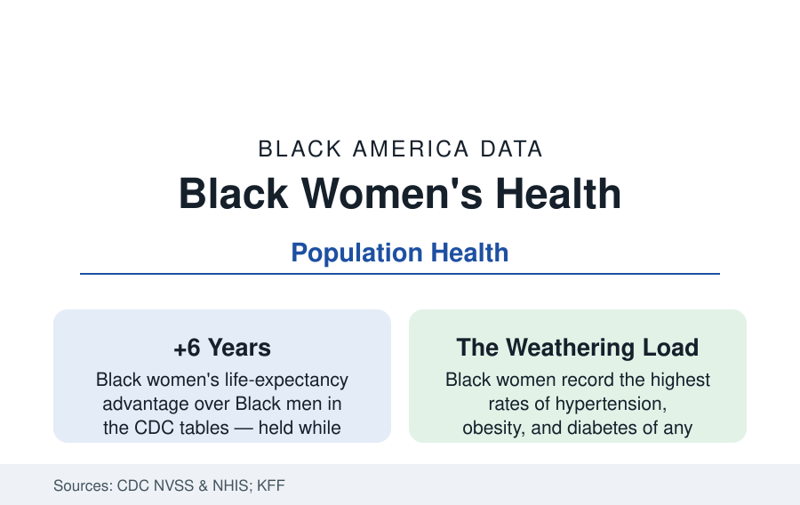

Black Public Health
Black Women's Health: Longer Lives, Heavier Loads
Black women outlive Black men by about six years while carrying higher rates of nearly every chronic condition. The consolidated women's health data.

Black women's health data hold the section's central paradox in one population: the longest-lived of Black America's demographics — outliving Black men by roughly six years in the CDC tables — carrying simultaneously the highest rates of hypertension, obesity, diabetes, and autoimmune disease of any female group in the federal data. Longevity and burden, in the same bodies, at the same time. This article consolidates the women's file.
The Chronic Load, Condition by Condition
The individual files of this tab converge here with female majorities: hypertension at the highest female rates in the world-comparable data (the weathering profile's biomarker); diabetes prevalence and its complication rates; obesity at roughly 55 percent in the NHANES editions (the rate whose drivers the obesity file decomposed); lupus and the autoimmune cluster at multiples (the lupus profile's nine-to-one female concentration); fibroids — the condition the general data barely count, with Black women's prevalence by age fifty approaching universality in the ultrasound studies, hysterectomy its frequent endpoint (the procedure rates' racial data among the surgical file's widest spreads); breast and cervical cancers' mortality paradoxes (screening files); and the maternal file as the young-adult years' mortal risk. The disability and chronic-pain data add the functional ledger: Black women report activity limitation at the highest female rates while remaining the workforce's and the caregiving system's load-bearing population — the care economy's providers drawn from the population carrying the most illness, a recursion the data state without comment.
Reproductive Health Across the Lifespan
The reproductive file beyond maternity: contraceptive use and access (the method mix's history — including the sterilization era's documented abuses and their long shadow in the trust data — and the modern LARC uptake and counseling-quality research); the menopause file, where the landmark SWAN study's findings are this profile's own: Black women enter menopause earlier on average, endure vasomotor symptoms longer (the study's famous duration gap — symptoms persisting years longer than white women's median), and receive hormone therapy at the lowest rates in the treatment data; the bone file (osteoporosis screening's paradox — lower fracture rates at lower measured density, the risk calculators' known miscalibration for Black women in the research literature); and the gynecologic cancers (endometrial cancer's mortality gap — Black women's survival deficit among the largest in the cancer file, driven by aggressive subtypes and treatment delays the registry studies decompose). The through-line is the system's response time: the pain-dismissal literature (the studies of Black women's symptoms discounted in clinical encounters, the fibroid and endometriosis diagnostic delays measured in years) quantifies a variable the patients' surveys have always reported.
Mental Health: The Strong Black Woman Schema in the Data
The mental-health file's female chapter is organized around a construct the researchers named from the data: the Strong Black Woman schema — the cultural mandate of strength, self-reliance, and caregiving priority — measured in the psychology literature as both resource and risk (associated with resilience outcomes and with delayed help-seeking, emotional suppression's physiological costs in the weathering biomarkers, and the obesity file's stress-eating pathways). The rates themselves: depression and anxiety prevalence reported below white women's in the surveys — alongside the suicidology's caution about measurement — with treatment rates lower still, the therapy workforce's Black female supply (the one demographic well-represented among Black clinicians) and the faith and sister-circle infrastructures carrying the support system's real volume in the utilization data. The postpartum file (the maternal profile's mental-health chapter — screening's spread and the treatment gap) and the elder file (the caregiving grandmothers' own depression data) bracket the lifespan.
The Responses With Data
The women's health infrastructure is the section's most built-out counter-system: the Black Women's Health Study itself (Boston University's 59,000-woman cohort since 1995 — the data source beneath a shelf of this tab's findings, proof of what a dedicated cohort yields), the Black Women's Health Imperative (the policy and programs layer), the specialty clinical programs (fibroid centers, the maternal safety collaboratives), the doula and midwifery revival (the maternal file's workforce data), the beauty-salon health interventions (the barbershop trials' sister literature — blood pressure and screening programs in salons posting strong reach data), and the research pipeline corrections (the menopause, fibroid, and endometrial files' dedicated funding lines of the current decade). The representation file closes it: Black women are the majority of Black physicians in the newest cohorts (the workforce profile) — the women's health of the next generation will be substantially doctored by its own daughters.
Reading the Women's File
Six extra years of life, bought with the heaviest disease load in the female data — Black women's health is the weathering hypothesis with a face: endurance as both the achievement and the mechanism of harm. The file's demand runs through every program that works: believe the symptoms the first time, staff the system with the population itself, and count the caregiving as the labor it is. The data have been saying it for decades, in the largest female cohort ever followed. Listening is the intervention.
More in Black Public Health
Hypertension Among Black Adults: Prevalence, Control, and Consequences
About 55 percent of Black adults have hypertension — the highest rate of any U.S. group. Prevalence, onset, control, and the stroke, heart, and kidney consequences in the data.
Diabetes Among Black Adults: Prevalence and Complications
Nearly one in five Black adults has diabetes, diagnosed or undiagnosed — and its complications fall with particular weight. The CDC data on prevalence, control, and outcomes.
Black Life Expectancy: The Gap at Birth and Its Causes
Black life expectancy at birth is about 73 years, roughly five years below the national figure — the summary measure of every health gap in this section. The CDC data.
Source: Centers for Disease Control and Prevention, National Vital Statistics System and National Health Interview Survey; Office on Women's Health; Kaiser Family Foundation women's health analyses.